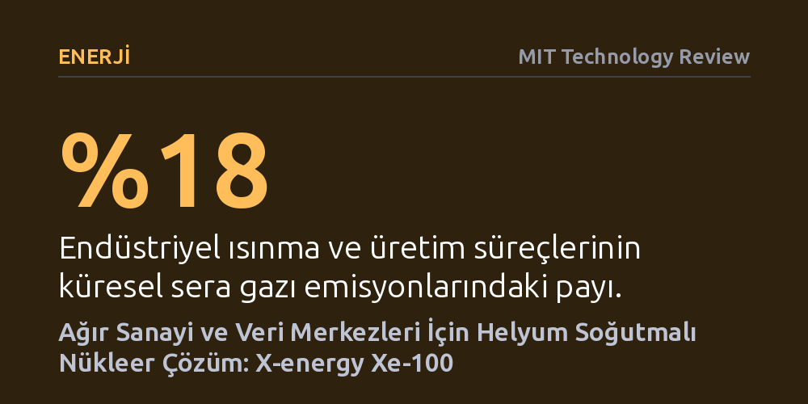

ENERJI · MIT Technology Review · 2026-10-07
X-energy’nin geliştirdiği helyum soğutmalı küçük modüler reaktörler, ağır sanayi ve veri merkezlerine yüksek sıcaklıkta ısı ile elektrik sağlamayı hedefliyor. Ancak teknolojinin önünde yüksek maliyetler, henüz kanıtlanmamış ticari işletim geçmişi ve yüksek hacimli nükleer atık gibi ciddi engeller bulunuyor.
Temiz enerji dönüşümünün sadece elektrik şebekesinden ibaret olmadığını, fosil yakıtlara bağımlı ağır sanayi ve yapay zekanın devasa ısı ihtiyacında nükleer enerjinin sunduğu yeni fırsatları ve riskleri gösteriyor.

Rüzgar türbinleri ve güneş panelleri elektrik şebekelerini karbonsuzlaştırma konusunda önemli mesafe katetse de ağır sanayinin bambaşka bir ihtiyacı var: doğrudan, kesintisiz ve çok yüksek sıcaklıkta termal enerji. Çimento, cam ve çelik üretiminden plastik, gübre ve kimyasal madde imalatına kadar pek çok kritik sektör, kimyasal tepkimeleri tetikleyebilmek için yüzlerce derecelik ısıya gereksinim duyuyor. Günümüzde bu devasa ısı ihtiyacı neredeyse tamamen fosil yakıtlar yakılarak karşılanıyor ve küresel sera gazı emisyonlarının yaklaşık yüzde 18’ini oluşturan bu süreçlerin elektrikle ikame edilmesi son derece zor görülüyor.
Mevcut geleneksel nükleer santraller ise bu tabloyu değiştirmeye yetmiyor. Çünkü bugün devrede olan ticari reaktörler soğutucu olarak sıvı su kullanıyor. Basınç uygulanarak suyun kaynama noktası yükseltilse dahi, sistemin ulaşabildiği azami işletme sıcaklığı sanayinin talep ettiği düzeylerin yüzlerce derece altında kalıyor. Bu fiziksel sınır, ağır sanayiyi fosil yakıtlardan kurtarmak için su soğutmalı geleneksel mantığın dışına çıkan reaktör tasarımlarını zorunlu kılıyor.
X-energy tarafından tasarlanan Xe-100 küçük modüler reaktörü, su yerine soğutucu gaz olarak helyum kullanarak bu sıcaklık bariyerini aşmayı amaçlıyor. Helyum kullanımı sistemin çok daha düşük basınç altında çalışmasına imkan tanırken, çalışma sıcaklığını klasik santrallerin çok üzerine çıkarıyor. Isınan helyum gazı suyu aşırı kızgın buhara dönüştürüyor; ortaya çıkan bu buhar tesislerde doğrudan proses ısısı olarak kullanılabildiği gibi, türbinler aracılığıyla 80 megavat elektrik üretimine de dönüştürülebiliyor. Bu kapasite, klasik nükleer santrallerin yaklaşık onda birine denk geliyor.
Tasarımın güvenlik mimarisini ise 'TRISO' adı verilen özel yakıt kürecikleri oluşturuyor. Çakıl taşı boyutundaki bu tanecikler, uranyum çekirdeğini erimeye ve kimyasal aşınmaya karşı koruyan çok katmanlı karbon ve seramik zırhlarla kaplanıyor. Reaktörün tepesinden sürekli eklenip yavaşça tabana doğru süzülen bu yakıt küreleri, reaktörün tamamen enerjisiz kaldığı acil durumlarda dahi fizik kuralları gereği kendi kendini koruyor: Reaktör içi sıcaklık yükseldiğinde nükleer reaksiyon kendiliğinden yavaşlayıp duruyor.
Küçük modüler reaktörlerin gigavat ölçeğindeki hantal santrallere kıyasla en belirgin avantajı, tüketimin gerçekleştiği sanayi tesislerinin hemen yanına kurulabilmeleri. Bu esneklik, yeni iletim hatları çekme zorunluluğunu ortadan kaldırarak doğrudan kimya tesislerine ya da petrol rafinerilerine yerinde temiz enerji sağlama kapısını aralıyor. Nitekim kimya devi Dow’un Teksas’taki tesisi için ilk yasal onay aşamasını geçen reaktör projesi, nükleerin doğrudan sanayi üretimine entegre olabileceği 2030’lu yılların ilk örneklerinden biri olmaya aday.
Öte yandan reaktörler için devasa bir diğer pazar yapay zeka tarafında şekilleniyor. Yapay zeka ve veri merkezleri, günümüzde ABD'deki yeni elektrik talebinin tek başına en büyük kalemi haline gelmiş durumda ve bu tüketimin 2030'a kadar ikiye katlanması bekleniyor. X-energy, Amazon gibi teknoloji devleriyle yürüttüğü iş birlikleri sayesinde 12 adede kadar reaktörü yan yana kümeleyerek veri merkezlerine 7/24 kesintisiz ve şebekeden bağımsız temiz elektrik sunmayı hedefliyor.
Helyum soğutmalı fisyonun kuramsal geçmişi Manhattan Projesi dönemine kadar uzansa da teknolojinin sahadaki güvenilirliği henüz rüştünü ispatlamış değil. Günümüzde bu reaktör tipini ticari ölçekte deneyen tek ülke olan Çin’deki iki reaktör, kesintisiz çalışma düzeni sağlamakta ciddi operasyonel güçlükler yaşadı. Bunun yanı sıra nükleer projelerindeki geleneksel bütçe ve takvim aşımları göz önüne alındığında, küçük modüler reaktörlerden elde edilecek elektriğin güneş enerjisinden altı kat daha pahalıya mal olacağına yönelik resmi tahminler, ekonomik fizibilitenin önündeki en büyük soru işareti olarak duruyor.
Bir diğer kritik tartışma konusu ise nükleer atık yönetimi. TRISO yakıtının sağlam kabukları kaza güvenliği ve nükleer silah yayılmasını önleme açısından büyük üstünlük sağlasa da birim enerji başına klasik santrallere kıyasla on kat daha fazla hacimde kullanılmış nükleer atık üretebiliyor. Her ne kadar bu atıkların depolanması daha az karmaşık olsa da yaratacağı hacimsel yük ve ABD'deki teşvik ikliminin uzun geliştirme takvimi içinde değişebilme ihtimali, projelerin önündeki temel belirsizlikler arasında yer alıyor.